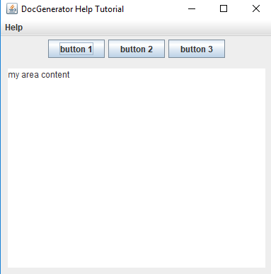
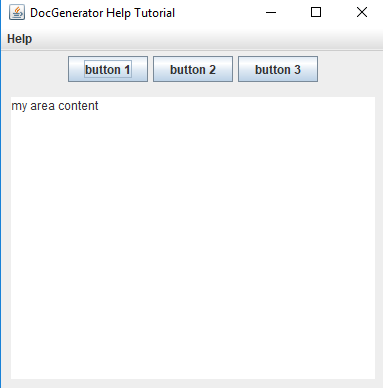

Context-sensitive Help tutorial
1 Specify the Help content configuration
2 Generate the help content
3 Create our Swing application
4 Integrating the context-sensitive help in our Swing application
5 Launch our application
6 Notes
7 See Also
2 Generate the help content
3 Create our Swing application
4 Integrating the context-sensitive help in our Swing application
5 Launch our application
6 Notes
7 See Also
This article is tutorial which explains how to add a Context-sensitive Help to a Swing application. You will:


To use the Context-sensitive help:
- Reuse the content specified for the Help system Swing tutorial
- Specify the Help content configuration to add the references to use for our Context-sensitive help
- Regenerate the zip file containing the help content
- Modify the Swing Java code to integrate the Context-sensitive help to our application components
Specify the Help content configuration
We will add help IDs for our articles and titles[1]
We can add Help IDs for any article or title, but we dont need to add IDs for every article and title defined in our wiki
: <helpContent> <ref id="button1" article="button 1" /> <ref id="button2" article="button 2" /> <ref id="button3" article="several components" title="button 3" /> <ref id="textfield" article="several components" title="text field" /> <ref id="panel" article="several components" title="panel"/> </helpContent>
Generate the help content
Let's generate our help content. Double-click on the jar file of the application and:- Input directories: Set your directory
- Output directory: Set another empty directory for the help content result
- Output type: Set "HELP" as the output type
- Click on "Apply"
articles resources -- articles.xml -- index.html -- README.txtThe
articles.xml now also contains the references for the help IDs.
Create our Swing application
We will reuse the code written for our Help system Swing tutorial. We will add a toolbar with several buttons:private void createToolbar(Container cont) { JPanel panel = new JPanel(); cont.add(panel, BorderLayout.NORTH); JButton button1 = new JButton("button 1"); JButton button2 = new JButton("button 2"); JButton button3 = new JButton("button 3"); panel.add(button1); panel.add(button2); panel.add(button3); } private void createLayout() { Container cont = this.getContentPane(); cont.setLayout(new BorderLayout()); try { viewer = new SwingHelpContentViewer(); factory.install(viewer); viewer.getHelpWindow(this, "Help Content", 600, 700); createToolbar(cont); createContent(cont); createMenu(); } catch (IOException ex) { ex.printStackTrace(); } }We have the following Window:

Integrating the context-sensitive help in our Swing application
Now we will integrate a Help system with our Help content in this application. For that, we need to:- Register the application window with our
SwingHelpContentViewer:
viewer.registerContextHelpWindow(this);
- Register each button for which we want to add a context-sensitive help:
viewer.registerContextHelp(<helpID>, button);
- Create the context-help button (to start the context-sensitive help), and add it to the toolbar:
JButton helpButton = viewer.createContextHelpButton(); panel.add(helpButton);
private void createToolbar(Container cont) { viewer.registerContextHelpWindow(this); JPanel panel = new JPanel(); cont.add(panel, BorderLayout.NORTH); JButton button1 = new JButton("button 1"); viewer.registerContextHelp("button1", button1); JButton button2 = new JButton("button 2"); viewer.registerContextHelp("button2", button2); JButton button3 = new JButton("button 3"); viewer.registerContextHelp("button3", button3); viewer.registerContextHelp("panel", panel); panel.add(button1); panel.add(button2); panel.add(button3); JButton helpButton = viewer.createContextHelpButton(); panel.add(helpButton); }We now have the following window for our application:
Launch our application
Now the context-sensitive help is integrated in our Swing application.To use the Context-sensitive help:
- Click on the question-mark button to call the context-sensitive help
- The pointer changes to a new shape:

- Left click on a button, then the Help window appear on the associated article and title
Notes
- ^ We can add Help IDs for any article or title, but we dont need to add IDs for every article and title defined in our wiki
See Also
- Tutorials: This article presents a list of tutorials
- Help system: This article explains how to use the JavaHelp-like feature of the tool
- Help Swing API: This article explains how to use the Help Swing API
×

Categories: javahelp | tutorials